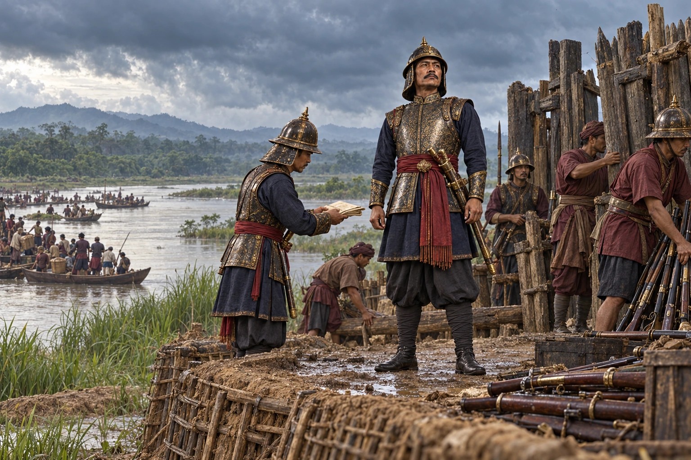

Defeat at Hadira Chowki; Tilwa Proclaimed Raja of Assam
June–July 1822 · The days of the Burmese

Mingimaha Tilwa defeats Chandrakanta at Hadira (Assam) Chowki. Chandrakanta withdraws to British territory, and Tilwa is declared Raja of Assam, ending Ahom rule until 1826.
Wikipedia places the defeat in June 1822, with an alternative account in July. Selects the captured-post aftermath and Tilwa’s consolidation. June/July dating varies; no exact proclamation ceremony or personal presence of Bagyidaw is asserted. This military defeat is distinguished from the 1826 treaty.
Sources
People: Mingimaha Tilwa, Chandrakanta Singha (Sudingphaa), Bagyidaw